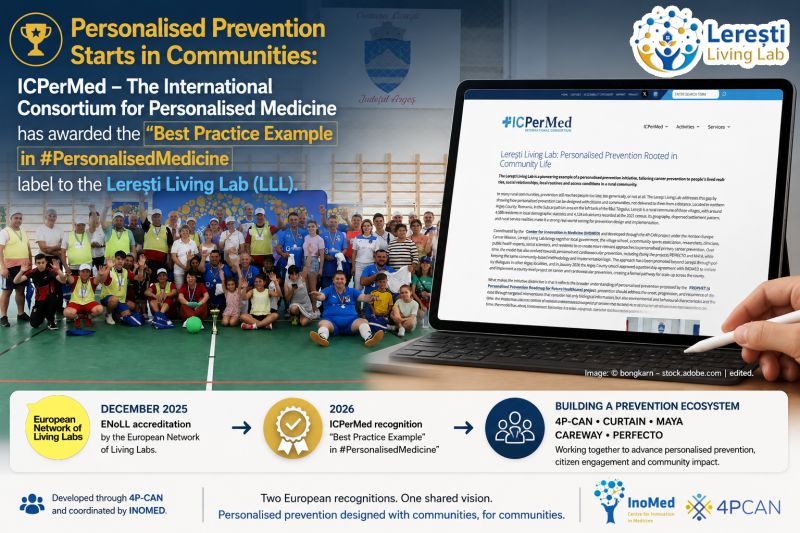

June 2026

This recognition represents the second major European acknowledgement received by the Lerești Living Lab. In December 2025, the initiative was accredited by ENoLL, recognising it as a real-life environment for co-creation, experimentation, and citizen-centred innovation.
The new ICPerMed label further strengthens this trajectory, highlighting the Living Lab as an example of how personalised prevention can be translated into meaningful action at community level.
Developed through the Horizon Europe Cancer Mission 4P-CAN Project and coordinated by INOMED, the LLL has become a real-world environment where citizens, local authorities, schools, sports organisations, healthcare professionals, researchers, and civil society work together to co-create new approaches to prevention.
What makes this recognition particularly meaningful is that it reflects a broader understanding of personalised prevention, closely aligned with the vision developed through PROPHET.EU and the wider European personalised prevention agenda.
Through community consultations, personal network analysis, Net-Map exercises, health festivals, school activities, sports initiatives, and continuous citizen engagement, the Living Lab has explored how prevention can become more relevant, more accessible, and more equitable when communities actively participate in shaping it.
As Marius Geanta, MD, PhD, Coordinator of 4P-CAN and President of INOMED, recently noted: “Prevention cannot be done from a capital city only. It must be developed locally and adapted to local realities.”
Effective personalised prevention requires trust, participation, and communities. What began through 4P-CAN is now evolving into a broader prevention ecosystem where additional European initiatives — including CURTAIN Project, MAYA Project, CAREWAY, and PERFECTO - FH — are adding new layers focused on cancer literacy, cardiovascular prevention, citizen engagement, implementation science, and community participation.
“If we want to reduce the burden of chronic diseases, be more effective in prevention and promote health, what we are building in Lerești can represent a model. We initiated this model, we continue to strengthen it, but we need more support to scale it and take it to the next level,” Dr. Geanta concluded.
More info: https://lnkd.in/e2mTWXhF